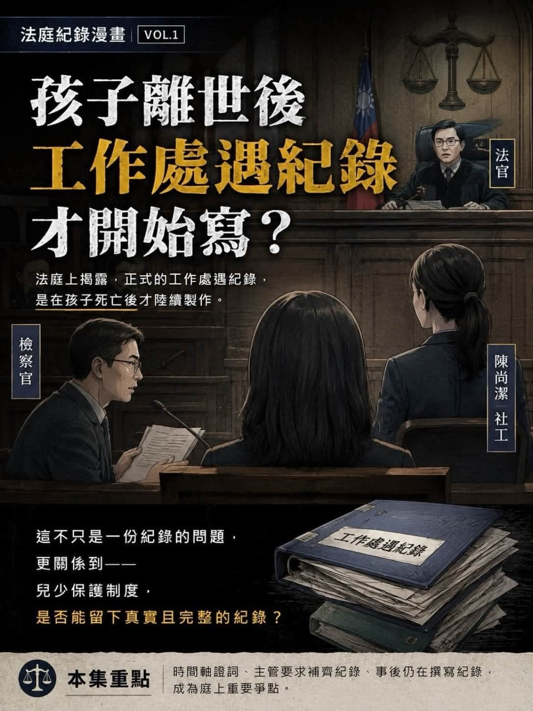
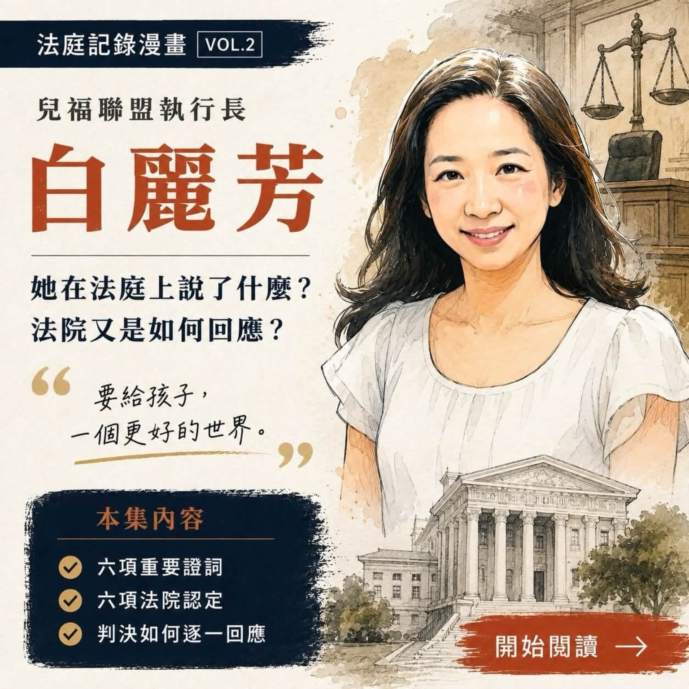

VOL.1 · EP.01
レビュー
子供の死後
職場での出会いの記録を書き始めますか？
職場での出会いの記録を書き始めますか？
法廷記録コミックス 1巻｜第1話
児童福祉同盟のソーシャルワーカー、陳尚潔氏の事件の一審公判における、労働面談記録の作成時期、文書のバージョン、記録の性質に関する争点を整理する。
公開裁判情報と法廷観察を画像とテキストの形式で編集します。第 1 話と第 2 話は、公式 Web サイトで全文をページごとに読むことができ、元の Facebook 投稿のソースは保持されています。

児童福祉同盟のソーシャルワーカー、陳尚潔氏の事件の一審公判における、労働面談記録の作成時期、文書のバージョン、記録の性質に関する争点を整理する。

法廷での白立芳氏の重要な証言、法廷による関連問題の特定、児童保護制度の実際的な実施における中核問題をまとめます。